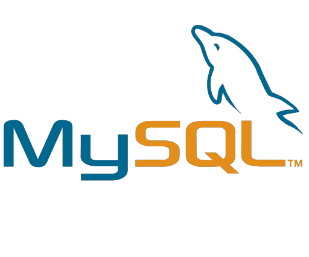
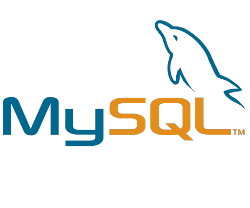

Hello, I'm Temgoua Dareen. Nice to meet you
I have a strong interest in setting up and monitoring databases. I also like to visualize data with Businees Intelligence tools hoping to be helping organizations meet their objectives and increase performance through the use of data.
In a quest for always keeping myself updated, I subscribe to newsletter and follow communities, and I also attend conferences


 



This dashboard project was about the Citi Bike Share System Trip History for 2018, specifically for trips starting in Jersey City. With this dashboard, we were aiming to determine: the type of person using the Citi Bike Stations, the periods during which the Citi Bike System was used the most and finally which stations were being used during the busiest times.
Click on the image to see the dashboard on Tableau